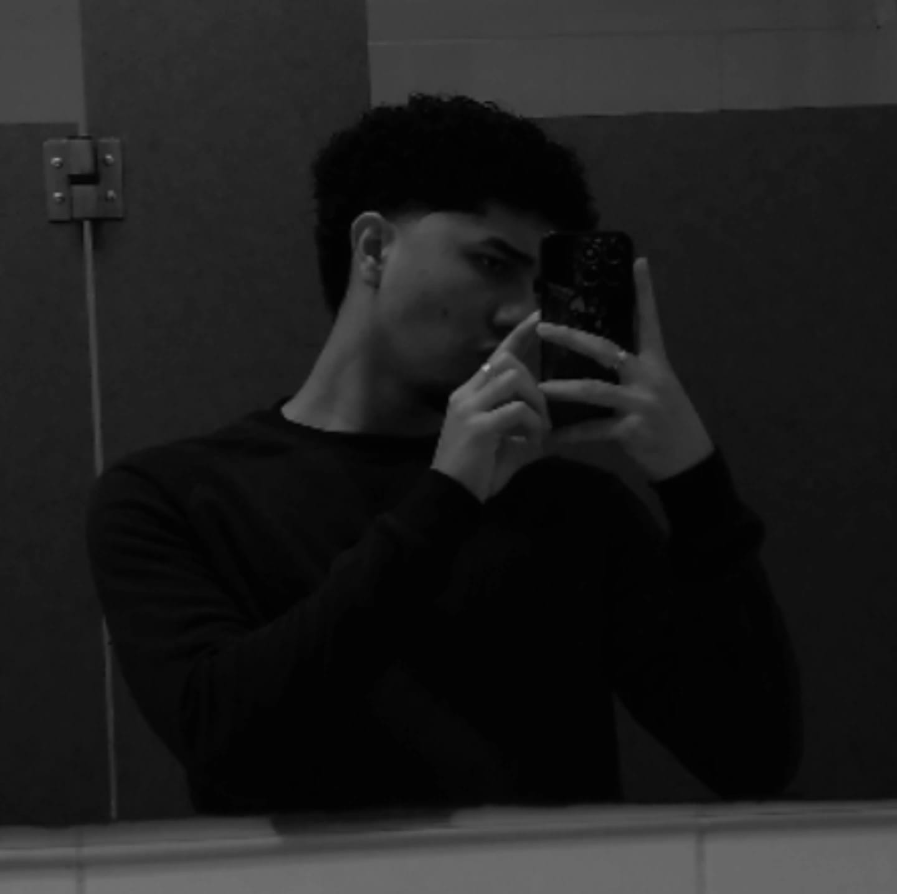

Edward Camaño

¡Hola! Soy Edward Agustin Camaño Pinilla. Este es un breve repaso sobre quién soy, lo que me gusta y algunas cosas que me definen.
Actualmente curso Ingeniería Web y me apasiona aprender sobre la creación de sitios web funcionales, creativos e interfaces amigables.
En mi tiempo libre disfruto practicar mis hobbies como jugar fútbol, ver series, animes y explorar nuevas herramientas de software. También me gusta leer y ver
películas de distintos géneros. Abajo comparto mis libros, pasatiempos, cualidades, películas y música favorita.
Mi sitio web favorito: Visítalo aquí .
Mis libros favoritos
“A Game of Thrones” (Juego de Tronos) -Bantam Spectra
Bajo la misma estrella – John Green.
After – Anna Toddl
Culpables (Culpa Mía, Culpa Tuya, Culpa Nuestra) – Mercedes Ron
A través de mi ventana – Ariana Godoy
Mis pasatiempos
Jugar fútbol
Ver anime
Pasar tiempo con mi novia y mi familia
Informarme de cosas relevantes en temas como tecnología, autos, computadoras, historia, etc
Escuchar música
Mis cualidades
Responsable Cumplo con mis compromisos y responsabilidades, aunque a veces soy suelo procastinar.
Curioso Me gusta investigar y aprender el por qué de cosas que me parezcan interesantes
Amigable Disfruto brindar ayuda a personas cuando lo necesiten y me suelo mostrar amable
Inquieto Me gusta estar siempre haciendo algo en lugar de no hacer nada
Consejero Me gusta estar siempre dándoles consejos a mis amistades, ya sea por vivencias propias, o cuando considero que algo es mejor que otra cosa
Películas favoritas
Acción
Rápidos y Furiosos - Saga Completa
Búsqueda Implacable - Saga Completa
Comedia
Superbad
Son como niños (1, 2)
Ciencia ficción
Interestelar
Avengers - Saga Completa
Transformers - Saga Completa
Canciones favoritas
Mi playlist personal
Canción
Género
Artista/Grupo
Álbum
Año
#
Título
Detalles
1 Die For You R&B / Pop The Weeknd Starboy 2016
2 Loft Music R&B / Alternative The Weeknd House of Balloons 2011
3 LOKENECESITAS Reguetón Saiko, Omar Courtz Natsukashii Yoru 2023
Video corto (archivo local)
Su navegador no soporta el video.
Audio de mi canción preferida (archivo local)
Su navegador no soporta el audio.
Video de YouTube embebido
Video de mi artista favorito/a:
VIDEO